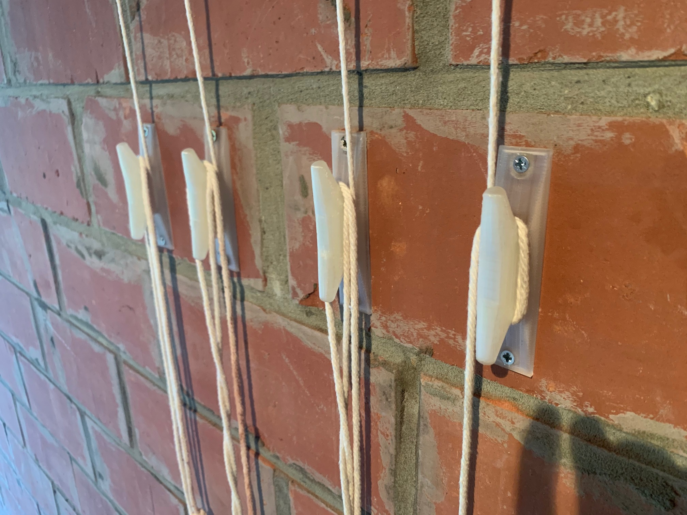

This project adresses an issue that several of my friends and myself seems to have. A bicicle takes a lot of space. It is possible to hang them up ot the ceiling however I could not find a system that suited me. This project was intersting as one of my bikes has a mass of 15kg. So these parts need to endure high stresses in order to support the bikes. The hook providing the connection with the ceiling are of type M5. Metal is obviously several times stronger. All wheels are supported with 7*22mm ball bearingings of which I have a large stock. This allows for smooth opperation. There are two cables for each bike. At first the two calbes were connected together. The required force to pull the bikes up was much higher than what I expected. So I choose to use two locking mechanisms per bike. The system is opperational for quite awhile now and works fine. The print material is natural PLA with an infill denities of 80% for the critical parts. After working out the difficulties w.rt. the forces and ensuring smooth opperation, I have printed the same system for another client who seems to be happy with it.
| Service | Time | Weight | Cost |
|---|---|---|---|
| 3d Measurement | 1 h | 16 € | |
| 3d Modeling | 10 h | 160 € | |
| Printing Material | 294 gr | 14.7 € | |
| Printing Time | 41 h | 30.3 € | |
| Support Removal | 3 h | 48 € | |
| Total Cost | 269.0 € |
It should be pointed out that with some goodwill, the costs for the support material removal can esily be saved. See the homepage for more information on this topic. The part was quite complicated and therefore the design costs are quite high. The actual printing costs only amouts to 45,0 €. The unprocesed part is availble to other custumors for reprints at 1,5 times the actual printing cost or 51,9 €. The processed part (support removal) is availeble for the printing cost plus support removal or 93,0 €. A pack containing all processed parts, screws and bolts, 12m of rope, all bearings (the whole set for 1 bicycle) is availeble for 110 €.
